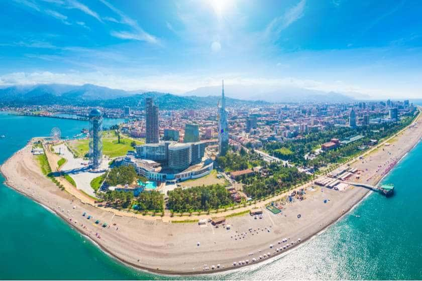
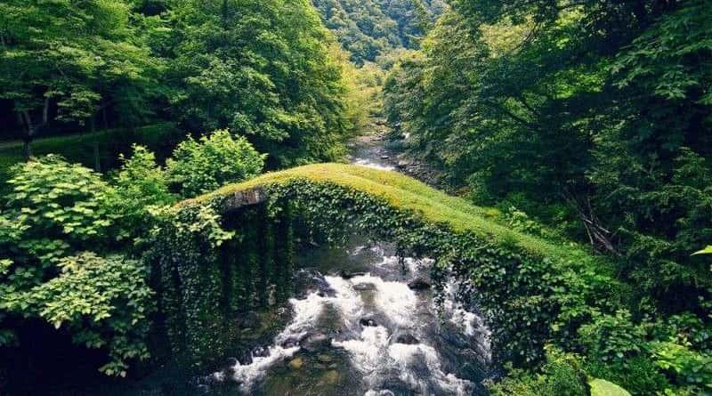
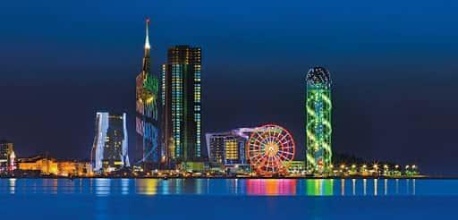
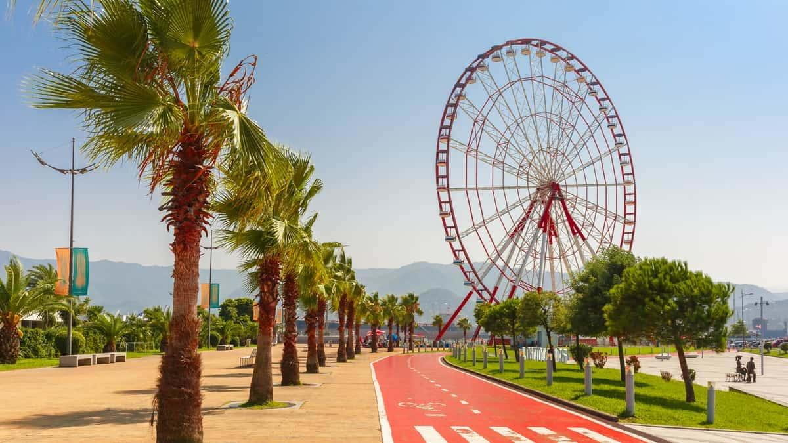
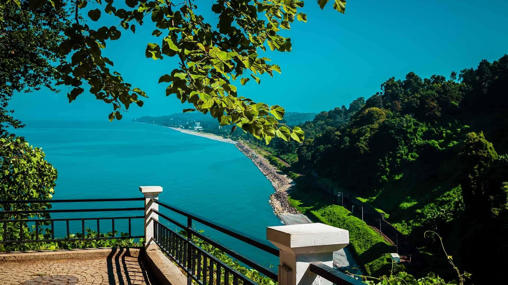

ბათუმი
ბათუმი, ტურიზმი აჭარაში | Batumi, Tourism in Adjara რომელი ქვეყნის მოგზაურები სტუმრობენ აჭარას ყველაზე ხშირად აჭარაში ტურისტების მოზიდვის მიზნით, ძირითადი აქცენტები და მარკეტინგული გათვლები კეთდება ისეთ ქვეყნებზე, როგორიცაა თურქეთი, ირანი, უკრაინა, სომხეთი, პოლონეთი, აზერბაიჯანი და სხვა. აღნიშნული ქვეყნებიდან ხორციელდება პირდაპირი ჩარტერული რეისები ბათუმის აეროპორტში. ტურისტული განვითარების კუთხით, ბათუმი აჭარის რეგიონის ერთ-ერთი პოპულარული და ტურისტებისთვის საყვარელი ადგილი გახდა. მაგალითად, 2019 წლის მონაცემებით, კერძოდ კი აჭარის ტურიზმისა და კურორტების დეპარტამენტის ინფორმაციით, ვინდოუსის გადაყენება ტურიზმი აჭარაში 3.7 პროცენტით გაიზარდა (დაფიქსირდა 2 002 540 მილიონი საერთაშორისო ტურისტის ვიზიტი), 2018 წლის სტატისტიკურ მონაცემებთან შედრებით. აჭარის რეგიონში ყველაზე მეტი ვიზიტი შემდეგი ქვეყნებიდან განხორციელდა: თურქეთი – 894 750 მოგზაური აზერბაიჯანი – 206 412 მოგზაური რუსეთი – 106 276 მოგზაური ისრაელი – 100 992 მოგზაური უკრაინა – 59 342 მოგზაური. ამ ფაქტს განაპირობებს ერთი მხრივ ბათუმის გეოგრაფიული მდებარეობა, რაც თურქეთის საზღვართან სიახლოვეს გულისხმობს (ხელმისაწვდომოა ყველა სახის სატრანსპორტო საშუალებებთან), ხოლო მეორე მხრივ კი, მისი მნიშვნელოვანი რესურსი, აჭარის საზღვაო და სამთო ტურიზმის მიმართულებით. შესაბამისად, ბათუმში აქტიურად იხსნება ამავე ქვეყნების ტურისტული სააგენტოების ფილიალებიც, რაც ბუნებრივია კიდევ უფრო ზრდის დამსვენებლების რაოდენობას მთლიან აჭარაში. ტურიზმის განვითარება აჭარაში ტურიზმი აჭარაში ბოლო წლებში მკვეთრად გაიზარდა, რაც გამოიხატა მაღალი კლასის სასტუმროების რაოდენობის მატებით. კონდიციონერის ხელოსანი ასევე გაუმჯობესდა ინფრასტრუქტურა, ძველი შენობებისა და კულტურული დაწესებულებების ექსტერიერი განახლდა, დაემატა ახალი შენობების და აშენდა არაერთი კულტურლი ძეგლი. ამასთან, გაიზარდა და განახლდა ბათუმის ბულვარი, დაემატა გართობის ობიექტები, კაფე-რესტორნები, განახლდა მიწისქვეშა კომუნიკაციის წყაროებიც, როგორიცაა წყალი, ელექტროენერგია, კანალიზაცია, გაზი, ა.შ.
    